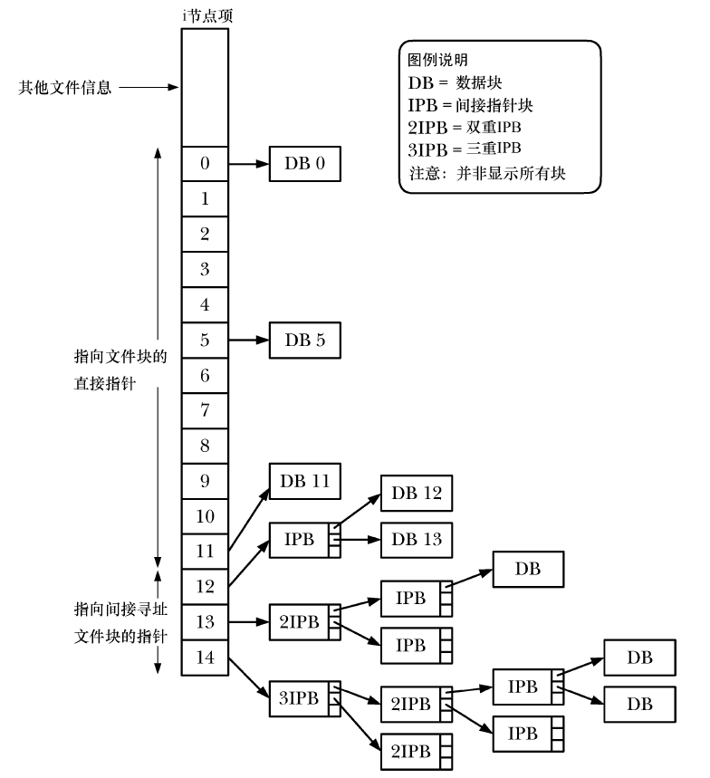
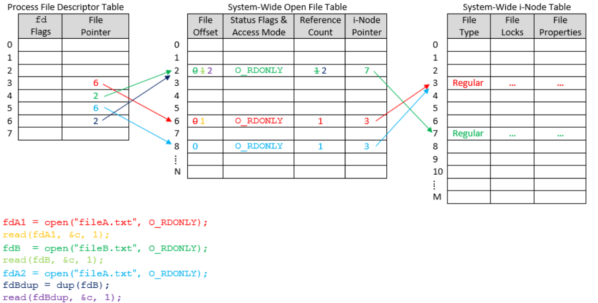
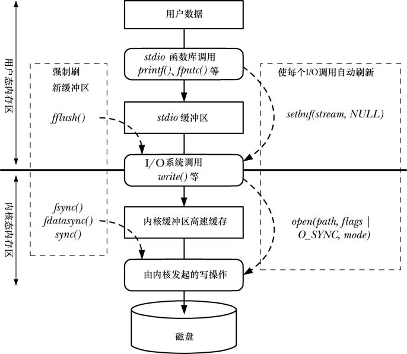

文件系统
设备文件
设备专用文件与系统中的某个设备对应。在内核中，每种设备类型都有与之对应的设备驱动程序，用来处理设备的所有I/O请求。设备驱动程序属内核代码单元，可执行一系列操作，（通常）与相关硬件的输入/输出动作相对应。
由设备驱动程序提供的API 是固定的，包含的操作对应于系统调用open()、close()、read()、write()、mmap()以及ioctl()。每个设备驱动程序所提供的接口一致，这隐藏了每个设备在操作方面的差异，从而满足了I/O 操作的通用性。
一些设备是实际存在的，如鼠标、磁盘和磁带设备；而另一些设备是虚拟的，就是不存在相应的硬件，但是内核会通过设备驱动程序提高一种抽象设备。设备可分为字符型设备和块设备，字符型设备基于每个字符来处理数据，如终端和键盘；而块设备则每次处理一块数据，如磁盘和磁带。在文件系统中，设备文件通常位于/dev目录下。
每个设备文件都有一个主ID和辅ID，主ID号标识一般的设备登记，内核使用主ID号查找与该类设备相应的驱动程序；而辅ID号则能够在一般等级中唯一标识特定设备。每个设备驱动程序都会将自己与特定主设备号的关联关系向内核注册，从而建立设备专用文件和设备驱动程序之间的关系。
磁盘和分区
常规文件和目录通常都存放在磁盘设备中，每块磁盘都可以划分为一个或者多个不重叠的分区，而内核将每个分区视为/dev路径下的单独设备。磁盘分区通常只存放三种类型的信息：文件系统、数据区域、交换区域。
文件系统结构
文件系统是对常规文件和目录的组织集合，磁盘的每个分区都对应于一个文件系统。Linux支持多种不同的文件系统，包括传统的文件系统、原生UNIX文件系统、网络文件系统、日志文件系统（文件更新时间变长，但是无需在系统崩溃之后检查文件系统的一致性）等。
在文件系统中，用来分配空间的基本单位是逻辑块，即文件系统所在磁盘设备上若干连续的物理块。文件系统由以下几个部分组成：
- 引导块：文件系统的首块。引导块只是用来引导操作系统的信息。
- 超级块：紧随引导块之后的一个独立块，包含与文件系统有关的参数信息，包括i节点表的容量、文件系统逻辑块的大小、文件系统大小
- i节点表：文件系统中的每个文件或者目录在i节点表中都对应着唯一一条记录，其中包含了关于文件的各种信息，包括文件类型、文件归属、文件访问权限、时间戳、文件大小、分配给文件的块数量、指向文件数据块的指针等。
- 数据块：用于存放数据
在ext2文件系统中，由于存储文件的数据块不一定连续甚至不一定按顺序存放，因此i节点表内维护了一组指针，如下图所示：
其中，每个i节点包含15个指针，前12个指向文件前12个块的位置，而后面则是一个指向指针块的指针，提供了第13个及后续数据块的位置。指针块中指针的数量取决于文件系统中块的大小。而如果文件较大时，也可以是多重的间接指针。这样就在维持i节点结构大小固定的情况下，支持任意大小的文件；同时文件系统可以用不连续方式存储文件块，并支持随机访问文件；此外，对于小文件来说，这种设计也满足了对文件数据块的快速访问（前12个为直接指针）
虚拟文件系统
由于Linux支持的各种文件系统所对应的底层实现细节并不相同，因此虚拟文件系统（VFS）为文件系统创建了一个抽象层来解决这一问题。VFS为文件系统定义了一套通用接口，所有与文件交互的程序都会安装这一接口进行操作，而每种文件系统也会提供VFS接口的实现。
VFS接口的操作与设计文件系统和目录的所有常规系统调用对应，包括open(), read(), write(), lseek(), close(), truncate(), stat(), mount(), umount(), mmap(), mkdir(), link(), unlink(), symlink(), rename()。
目录层级与文件挂载
Linux系统下所有文件系统中的文件都位于根目录树下，而树根就是根目录“/”，其他的文件系统都被挂载在根目录之下，被视为整个目录层级的子树。
在Linux系统下，使用mount device directory命令即可将名为device的文件系统挂载到目录层级中由directory指定的目录。使用unmount命令则会相应地卸载文件系统。如果不带任何参数执行mount命令，则可以列出当前已经挂载地文件系统。
同时，系统调用mount()也可以用来挂载文件，相应的卸载文件的系统调用为umount()和umount2()，它们的用法为：
1 |
|
要获得已挂载文件系统的相关信息，可以使用下面两个系统调用：
1 |
|
上述调用同时会得到一个statvfs结构，属于由statvfsbuf指向的缓冲区。其中，statvfs数据结构包含了关于文件系统的信息。
Linux系统下的三个文件包含了当前已挂载或者可挂载的文件系统信息：
/proc/mounts：它是内核数据接口的接口，因此总是包含已挂载文件系统的精确信息/etc/mtab：包含的内容与/proc/mounts类似，但是更加详细一些。/etc/fstab：由系统管理员手动维护，包含了对系统支持的所有文件系统的描述
这三个文件的格式相同，都包含6个字段：已挂载设备名、设备挂载点、文件系统类型、挂载标志、用于控制对文件系统备份操作的数字、用于控制对文件系统检查顺序的数字。
虚拟内存文件系统
Linux同样支持驻留在内存中的虚拟文件系统tmpfs。对于应用程序来说，可以和使用其他文件系统一样的方法进行操作，但是由于不涉及磁盘访问，因此虚拟文件系统的操作速度极快。
要创建一个tmpfs文件系统，可以使用如下命令：mount -t tmpfs source target
文件I/O
概述
在Linux系统中一切皆可以看成是文件，文件又可分为：普通文件、目录文件、字符设备文件、块设备文件、套接字文件、管道文件和链接文件。文件描述符（file descriptor）是内核为了高效管理已被打开的文件所创建的索引，其是一个非负整数（通常是小整数），用于指代被打开的文件，所有执行I/O操作的系统调用都通过文件描述符。一个程序刚刚启动的时候，0是标准输入，1是标准输出，2是标准错误。如果此时去打开一个新的文件，它的文件描述符会是3。
在Linux系统中，为了维护文件描述符，建立了三个表：进程级的文件描述符表（每个进程维护一个）、系统级的文件描述符表（所有进程共享）和文件系统的i-node表（所有进程共享），它们的关系如下图所示：
每一个文件描述符会与一个打开文件相对应。同时，不同的文件描述符也可以指向同一个文件。相同的文件可以被不同的进程打开，也可以在同一个进程中被多次打开。这些文件描述符也可以被重定向，从而指向其它任何文件对象。
大多数程序使用的3种标准的文件描述符如下：
| 文件描述符 | 用途 | POSIX名称 | stdio流 |
|---|---|---|---|
| 0 | 标准输入（默认指向键盘） | STDIN_FILENO | stdin |
| 1 | 标准输出（默认指向终端） | STDOUT_FILENO | stdout |
| 2 | 标准错误 | STDERR_FILENO | stderr |
执行文件I/O操作的4个主要系统调用为：
fd=open(pathname, flags, mode)：打开pathname所标识的文件，并返回文件描述符，用于在后续的函数调用中指代打开的文件。如果文件不存在可以创建，这取决于flags参数的设置，同时flags参数还可以指定文件打开方式（只读、只写、读写）。mode参数指定了由open()调用创建文件的访问权限numread=read(fd, buffer, count)：调用从fd所指代的打开文件中读取至多count字节的数据，并存储到buffer中。numwritten=write(fd, buffer, count)：调用从buffer中读取多达count字节的数据写入fd所指代的已打开文件中。status=close(fd)：在所有输入/输出操作完成之后，调用该函数释放文件描述符以及与之相关的内核资源
上述四个系统调用可以对所有类型的文件执行I/O操作，包括终端之类的设备。
通用I/O
open()
open()系统调用既可以打开一个已经存在的文件，也可以创建并打开一个新文件。它的用法如下：
1 |
|
如果打开成功，则返回一个文件描述符，用于在后续的函数调用中指代该文件；如果发生错误，则返回-1，并将errno设置为相应的错误标志。而且这一函数调用会保证，如果调用成功，则返回值是进程未使用的文件描述符中数值最小者。
其中参数的含义如下：
pathname：要打开的文件flags：位掩码，用于指定文件的访问模式，可以用一系列的常量进行位或运算进行组合，例如O_RDWR|O_CREAT|O_TRUNCmode：如果使用open()创建新文件，则这一参数可以用于指定文件的访问权限；如果未指定O_CREAT标志，则可以省略该参数
对于flags位掩码，它们可以使用的常量分为如下几组：
- 文件访问模式标志：
O_RDONLY，O_WRONLY，O_RDWR，分别表示以只读、只写、读写模式打开。这三个标志在flags参数中只能使用一个 - 文件创建标志：
O_CLOEXEC：为新的文件描述符启用close-on-exec标志O_CREAT：如果文件不存在则创建一个新的空文件，此时需要额外提供mode参数O_DIRECT：无系统缓冲的文件I/O 操作，也就是应用程序在执行磁盘I/O是绕过缓冲区高速缓存，从用户空间直接将数据传递到文件或者磁盘设备。对于大多数应用而言，使用这一方式可能会大大降低性能，因此它只适用于有特定I/O需求的应用。如果使用直接I/O，则用于传递数据的缓冲区的内存边界、文件和设备的偏移量、以及待传递数据的长度都必须为块大小的整数倍，否则将会导致EINVAL错误O_DIRECTORY：如果pathname参数不是目录则返回错误O_EXCL：此标志与O_CREAT标志结合使用表明如果文件已经存在，则不会打开文件，且open()调用失败，并返回错误，错误号errno为EEXIST。也就是说，此标志确保了调用者（open( )的调用进程）就是创建文件的进程。对文件是否存在的检查和创建文件属于同一原子操作。O_LARGEFILE：支持以大文件方式打开文件。由于存放文件偏移量的数据类型off_t是一个有符号的长整型数，因此在32位系统下，文件大小的限制为2GB以下。如果在32位系统下要处理大文件，则需要使用这一标志。此外，也可以在每个头文件中加入#define _FILE_OFFSET_BITS 64来实现。O_NOATIME：在读文件时，不更新文件的最近访问时间。要使用该标志，要么调用进程的有效用户ID必须与文件的拥有者相匹配，要么进程需要拥有特权（CAP_FOWNER）。否则，open()调用失败，并返回错误，错误号errno为EPERM。O_NOCTTY：如果正在打开的文件属于终端设备，这一标志防止其成为控制终端O_NOFOLLOW：在open()函数中指定了O_NOFOLLOW标志，且pathname参数属于符号链接，则open()函数将返回失败（错误号errno为ELOOP）。此标志在特权程序中极为有用，能够确保open()函数不对符号链接进行解引用O_TRUNC：如果文件已经存在且为普通文件，那么将清空文件内容，将其长度置0。在Linux 下使用此标志，无论以读、写方式打开文件，都可清空文件内容（在这两种情况下，都必须拥有对文件的写权限）
- 文件状态标志：
O_APPEND：总是在文件尾部追加数据。如果使用这一标志，则每次写入都会将文件偏移量移动至文件末尾，并完成数据写操作。这两步操作被合并到同一原子操作，避免了文件的脏写入问题。O_ASYNC：当对于open()调用所返回的文件描述符可以实施 I/O 操作时，系统会产生一个信号通知进程O_DSYNC：根据同步I/O 数据完整性的完成要求来执行文件写操作，也就是说后续对于这个文件的每个write调用都会自动将文件数据和用于获取数据的文件元数据（并不是所有的元数据）刷新到磁盘上。O_NONBLOCK：以非阻塞方式打开。如果open()调用没有立即打开文件，则返回错误，而不是陷入阻塞。而且调用open()成功之后，后续的I/O操作也是非阻塞的，如果I/O系统调用没有立即完成，则可能只会传输部分数据，或者系统调用失败。O_SYNC：以同步方式写入文件，也就是说后续对于这个文件的每个write调用都会自动将所有的文件数据和元数据刷新到磁盘上。
read()
read()系统调用从文件描述符所指代的打开文件中读取数据，它的用法如下：
1 |
|
其中count参数指定最多能够读取的字节数，buffer参数提供用来存放输入数据的内存缓冲区地址，缓冲区应该至少有count个字节。
如果read()调用成功，则返回实际读取的字节数；如果遇到文件结束则返回0；如果出现错误则返回-1。
write()
write()系统调用将数据写入一个已经打开的文件中，它的用法如下：
1 |
|
fd为待写入文件的描述符，count参数指定最多能够写入文件的字节数，buffer参数为要写入文件中数据的内存缓冲区地址，缓冲区应该至少有count个字节。
如果函数调用成功，将返回实际写入文件的字节数。该返回值可能小于count，对于磁盘文件可能因为磁盘已满，或者进程资源对于文件大小的限制。
需要注意的是，对磁盘文件执行I/O操作时，write()调用成功并不能保证数据已经写入磁盘。这是因为为了减少磁盘活动量和加快write()系统调用，内核会缓存磁盘的I/O操作。
close()
close()系统调用关闭一个打开的文件描述符，并将其释放回调用进程。这一文件描述符可以供该进程后续分配给其它文件。当一个进程终止时，将自动关闭它打开的所有文件描述符。它的用法为：
1 |
|
如果关闭成功，则返回0；失败则返回-1。
由于文件描述符属于有限资源，因此在程序中显式关闭不再需要的文件描述符是一个好的编程习惯，使得代码更具可读性也更加可靠。
lseek()
对于每个打开的文件，系统内核会记录一个文件偏移量（又被称为读写偏移量或指针）。文件偏移量指的是下一个read()或者write()操作的文件起始位置，以相对于文件头部起始点的位置来表示。文件第一个字节的偏移量为0。
打开一个文件时，会将文件偏移量设置为指向文件开始，以后每次read()或者write()调用都将自动对其进行调整，以指向已读或者已写数据的下一字节。
它的使用方法如下：
1 |
|
如果设置成功，则返回新的偏移位置，失败则返回-1。其中，fd为文件描述符，指向一个已打开文件；offset参数指定了一个以字节为单位的数值，它是一个有符号的整型数；whence参数表明参照哪个基点来解释offset参数。
whence参数可以为下列之一：
SEEK_SET：将文件偏移量设置为从文件头部起始点开始的offset个字节。此时offset必须为非负数。SEEK_CUR：相对于当前的文件偏移量，将文件偏移量调整offset个字节。此时offset可以为正也可以为负。SEEK_END：将文件偏移量设置为起始于文件尾部的offset个字节，也就是从文件最后一个字节之后的下一个字节算起。此时offset可以为正也可以为负。
如果程序的文件偏移量已跨越了文件结尾，然后再执行I/O操作，则会造成文件空洞。从文件结尾后到新写入数据间的这段空间被称为文件空洞。从编程角度看，文件空洞中是存在字节的，读取空洞将返回以0（空字节）填充的缓冲区。然而，文件空洞不占用任何磁盘空间。直到后续某个时点，在文件空洞中写入了数据，文件系统才会为之分配磁盘块。文件空洞的主要优势在于，与为实际需要的空字节分配磁盘块相比，稀疏填充的文件会占用较少的磁盘空间。
特殊用法
fcntl()
fcntl()系统调用对一个打开的文件描述符执行一系列的控制操作，它的用法如下：
1 |
|
其中，fd指的是文件描述符，cmd用于设置这一函数的功能，而后面的省略号表示参数会根据cmd的具体类型而定。返回值为-1表示失败，如果成功的话，返回值会因cmd而异。下面为fcntl的一些使用示例。
例1：可以使用fcntl()来获取一个打开文件的访问模式和状态标志。方法如下：
1 | int flags=fcntl(fd, F_GETFL); |
后续可以使用flags参数通过位运算来检查一些状态标志，例如：
1 | flags & O_SYNC //测试文件是否以同步写方式打开 |
例2：同样地，也可以修改一个打开文件的某些状态标志，允许更改的标志有：O_APPEND、O_NONBLOCK、O_NOATIME、O_ASYNC、O_DIRECT。修改方式如下：
1 | int new_flags; |
例3：可以用fcntl()复制文件描述符，用法为：
1 | int newfd = fcntl(oldfd, F_DUPFD, startfd); |
其中，oldfd指的是要复制的文件描述符，startfd为文件描述符的副本进行编号限制，将使用不小于startfd的最小未用值作为描述符的编号。
此外，另一系统调用dup3也可以完成这一功能，用法如下：
1 |
|
如果成功则返回新的文件描述符，失败返回-1。
特定偏移量的I/O
系统调用pread()和pwrite()可以完成与read()和write()相类似的工作，但是前两者会在offset参数所指定的位置进行操作，而不是从当前的文件偏移量处，且不改变文件的当前偏移量。用法如下：
1 |
|
分散输入和集中输出
系统调用readv()和writev()实现了分散输入和集中输出的功能，用法如下：
1 |
|
上述两个系统调用一次可传输多个缓冲区的数据，数组iov定义了一组用来传输数据的缓冲区，iovcnt定义了iov数组的长度。iovec的数据结构如下：
1 | struct iovec{ |
readv()从文件描述符中读取一片连续的字节，然后将其分散放置在iov指定的缓冲区中，从第一个缓冲区开始，依次填满所有的缓冲区。如果数据不足以填充所有缓冲区，则只会占有部分。
writev()将iov指定的所有缓冲区的内容拼接起来，然后以连续字节序列写入文件描述符指代的文件中。
如果想在指定的文件偏移量处执行分散输入/集中输出，则可以使用下面两个函数：
1 |
|
文件截断
下列两个系统调用可以将文件大小设置为length参数指定的值：
1 |
|
如果成功，则函数的返回值为0；失败则返回-1。当文件长度大于length时，调用会丢弃超出部分，但如果小于参数length，则调用将会在文件尾部添加一系列空字节或者一个文件空洞。
对于truncate()函数而言，它需要以路径名字符串来指定文件，并要求文件可访问，且对文件具有写权限。如果文件名为符号连接，则会对其解引用；而调用ftruncate()函数之前，需要以可写方式打开文件，获取其文件描述符，这一系统调用不会修改文件的偏移量。
/dev/fd目录
对于每个进程，内核都提供了一个特殊的虚拟目录/dev/fd，该目录中包含/dev/fd/n形式的文件名，其中n是与进程中的打开文件相对应的编号。打开/dev/fd目录中的一个文件就等同于复制相应的文件描述符，因此下面两行代码等价：
1 | fd=open("/dev/fd/1",O_WRONLY); |
需要注意的是，如果使用open()函数打开文件，则需要将其设置为与原描述符相同的访问模式，此时如果在flag标志的设置中引入其它标志是无意义的，系统会自动忽略。
创建临时文件
有些程序需要创建一些临时文件，仅供其在运行期间使用，程序终止后立即删除。有两个函数可以用于创建临时文件：
1 |
|
如果成功则返回一个文件描述符，失败则返回-1。其中参数template采用路径名的形式，最后6个字符必须为XXXXXX，这6个字符将会被替换，以保证文件名的唯一性，而且修改后的字符串将会被保存到template参数中。因此，template参数被设置为字符数组，而不是字符串常量。
1 |
|
tmpfile()函数会创建一个名称唯一的临时文件，并以读写方式打开。这一函数执行成功之后，将会返回一个文件流供stdio库函数使用。文件流关闭之后将自动删除临时文件。
示例
下面的程序使用以上的系统调用函数实现了tee命令的功能：
1 |
|
文件I/O缓冲
内核缓冲
read()和write()系统调用在操作磁盘文件时并不会直接发起磁盘访问，而是在用户空间缓冲区与内核缓冲区高速缓存之间复制数据。因此，写操作会先将用户空间内存传递到内核空间的缓冲区，然后在后续某个时刻再将缓冲区的数据刷写到磁盘中。如果在此期间另一进程试图读取文件的数据，内核将自动从缓冲区而不是文件中读取；而对于读操作，内核从磁盘中读取数据并存储到内核缓冲区，然后从缓冲区读取数据，直到把缓冲区的数据读完。对于序列化的文件访问，内核通常会执行预读以加快读取速度。
如果与文件发生大量的数据传输，通过采用大块空间缓冲数据，以及执行更少的系统调用，可以极大地提高I/O性能。
有时，我们需要控制文件I/O内核缓冲。fsync系统调用将使得缓冲数据与打开文件描述符fd相关的所有元数据都刷新到磁盘上。调用这一函数会强制使得文件处于同步I/O完成的状态，此时读请求的文件数据已经从磁盘传递给了进程，而写请求所指定的数据已经传递给磁盘，且用于获取数据的所有文件元数据以及所有发生更新的文件元数据也已经传递完毕。函数调用方式如下：
1 |
|
这一函数只有在对磁盘设备的传递完成之后才会返回。
另一个系统调用是fdatasync，它的运作类似于fsync，但是对于文件的元数据来说，只要求获取数据的所有文件元数据传递完毕：
1 |
|
fdatasync可能会减少磁盘操作的次数，因为在这一函数的调用过程中，部分元数据的改变无需进行更新。而fsync则会强制将元数据也传递到磁盘上。对于某些对性能要求较高，但是对某些元数据准确性要求不高的应用，便可以通过这种方式减少磁盘操作次数。
而sync系统调用则会使包含更新文件信息的所有内核缓冲区（数据块、指针块、元数据等）刷新到磁盘上：
1 |
|
在调用open函数时，指定O_SYNC标志也会使得后续每次调用write时都会自动将文件数据和元数据刷新到磁盘上。
需要特别注意的是，采用O_SYNC标志（或者频繁调用fsync()、fdatasync()或sync()）对性能的影响极大，会使得写入速度大大增加，尤其是当缓冲区的大小较低的时候。因此，如果需要强制刷新内核缓冲区，在设计应用程序的时候就应该考虑是否可以使用大尺寸的write()缓冲区。
stdio库的缓冲
C语言的stdio函数库可以避免自行处理对数据的缓冲，一些相关的函数调用如下。
设置缓冲模式
1 |
|
在打开一个文件流之后，setvbuf函数必须在调用任何其他stdio函数之前调用。这一调用将会影响后续在指定流上的所有stdio操作。其中各个参数的含义如下：
stream：指定要修改的文件流buf：针对于参数stream要使用的缓冲区，如果值为NULL，那么stdio库会为其自动分配一个缓冲区；如果不为NULL，则使用指向size大小的内存块作为缓冲区mode：指定缓冲类型，具有下列值之一：_IONBF：不对I/O进行缓冲，每个stdio库函数立即调用write()和read()函数，并忽略buf和size参数。stderr默认为这一类型_IOLBF：采用行缓冲I/O，指代终端设备的流默认属于这一类型。对于输出流，在输出一个换行符之前将缓冲数据；而对于输入流则每次读取一行数据_IOFBF：采用全缓冲I/O，单次读写数据的大小与缓冲区相同。指代磁盘的流默认采用这一方式
setbuf函数构建于setvbuf之上，执行了类似任务：
1 |
|
在setbuf函数中，参数buf可以被设置为NULL表示无缓冲，也可以被设置为指向由调用者分配的BUFSIZ个字节大小的缓冲区。BUFSIZ参数定义于<stdio.h>头文件中。
setbuffer函数类似于setbuf函数，但是允许调用者指定buf缓冲区大小：
1 |
|
刷新stdio缓冲区
无论当前采用哪一种缓冲区模式，在任何时候都可以使用fflush库函数强制将stdio输出流中的数据刷新到内核缓冲区中，用法如下：
1 |
|
如果参数stream为NULL，则fflush函数将刷新所有的stdio缓冲区。也可以将这一函数应用于输入流，这将丢弃已经缓冲的输入数据。
stdio库与系统调用混合
在同一文件上执行I/O操作时，还可以将系统调用和标准C语言库函数混合使用，下面两个函数有助于完成这一工作：
1 |
|
二者的功能相反，fileno函数是给定一个文件流，然后返回相应的文件描述符，之后便可在I/O系统调用中正常使用该文件描述符；而fdopen则给定一个文件描述符，然后创建一个使用该描述符进行文件I/O的相应流，mode参数与fopen中的含义相同，如果该参数与fd的访问模式不一致则会失败。
fdopen函数对于非常规的文件描述符很有用，借助这一函数便可在套接字、管道等文件类型上使用stdio库函数。
总结
stdio函数库和内核所采用的缓冲机制可以总结为下图：
文件属性
获取文件信息
使用如下几个系统调用，可以获取与文件有关的信息，其中大部分都提取自文件的i节点：
1 |
|
对于stat和lstat，无需对其所操作的文件本身拥有任何权限，但是对于指定路径的父目录要有执行（搜索）权限。
上述调用都会在缓冲区中返回一个由statbuf指向的stat结构，这个结构中包含了设备ID、i节点号、文件所有权、文件类型及权限、文件大小、已分配块、文件时间戳等信息。
文件时间戳
stat结构的st_atime，st_mtime和st_ctime字段为文件的时间戳，分别记录了文件的上次访问时间、上次修改时间、文件状态（即i节点内的信息）上次发生变更的时间。对时间戳的记录形式为自1970年1月1日以来经历的秒数。
一些系统调用可以用来修改时间戳：
1 |
|
文件所有权
每个文件都有一个与之管理的用户ID和组ID，据此可以判定文件所属的用户和组。当一个文件被创建时，其用户ID取进程的有效用户ID，而组ID则曲子进程的有效组ID或父目录的组ID。
下面的系统调用可以修改文件所有权：
1 |
|
文件权限
对于普通文件，stat结构中的st_mod字段低12位定义了文件权限，其中前3位为专用位，分别为set-user-ID位、set-group-ID位和sticky位，其余9位构成了定义权限的掩码，分别授予访问文件的各类用户（文件所有者、文件所属组、其它用户）的权限（可以读取文件内容、可以更改文件内容、可以执行文件）。
头文件<sys/stat.h>包含了用来表示文件权限位的常量，如下图所示：
备注1—Linux进程的ID
实际用户ID和实际组ID：登录shell从
/etc/passwd文件中读取相应用户密码记录的第三字段和第四字段，置为其实际用户ID和实际组ID，当创建一个新的进程时（如shell执行一个程序），将从父进程继承这些ID有效用户ID和有效组ID：当进程尝试执行各种操作（系统调用）时，将结合有效用户ID、有效组ID与辅助组ID一起确定授予进程的权限。通常，有效用户ID和有效组ID与相应的实际ID相同，但是也可以通过一些系统调用去修改有效用户ID和有效组ID
备注2—文件权限专用位的含义
set-user-ID位：如果这一位被设置，那么其它用户在执行该程序时，进程会拥有与程序文件属主相同的权限，即有效用户ID会被改变
set-group-ID位：与set-user-ID位的作用类似，但是修改的是有效组ID
sticky位：作用于目录时，起限制删除的作用。如果目录设置了该位，则表明仅当非特权进程拥有对目录的写权限，且为文件或者目录的属主时，才能对目录下的文件进行删除和重命名操作。
而对于目录来说，其权限方案与普通文件类似，但是权限的含义有不同。目录的读权限可以列出目录中的内容，写权限允许在目录内创建或者删除文件，可执行权限允许访问目录中的文件。
Linux内核会根据进程的有效用户ID、有效组ID和辅助组ID来进行权限检查。检查文件权限时，内核所遵循的规则如下：
- 对于特权级进程，授予其所有访问权限。
- 若进程的有效用户ID与文件的用户ID（属主）相同，内核会根据文件的属主权限，授予进程相应的访问权限。比方说，若文件权限掩码中的属主读权限（owner-read permission）位被置位，则授予进程读权限。否则，则拒绝进程对文件的读取操作。
- 若进程的有效组ID或任一附属组ID与文件的组ID属组）相匹配，内核会根据文件的属组权限，授予进程对文件的相应访问权限。
- 若以上三点皆不满足，内核会根据文件的other（其他）权限，授予进程相应权限。
而系统调用access便可以根据当前进程的真实用户ID和组ID来检查文件的访问权限：
1 |
|
如果pathname为符号引用，则函数将对其做解引用。参数mode为位掩码，通过下面四个常量的或运算组合而成：
F_OK：该文件是否存在R_OK：是否对该文件有读权限W_OK：是否对该文件有写权限X_OK：是否对该文件有执行权限
对于新建文件，内核会使用open()或者creat()中的mode参数所指定的权限；对于新建目录则会根据mkdir()的mode参数来设置权限。但是文件模式创建掩码umask会对这些设置进行修改，它是一种进程属性，当进程新建文件或者目录时，该属性用于指明应该屏蔽哪些权限位。
进程的umask通常继承自父shell，大多数shell的初始化文件会将umask默认设置为八进制值022，也就是对于同组或者其它用户总是屏蔽写权限。系统调用umask()可以将进程的umask改为指定的值，用法如下：
1 |
|
对这一函数的调用总会成功，并返回进程的前一个umask。
而下面两个系统调用可以直接修改文件的权限：
1 |
|
其中，mode参数可以是八进制的数字形式（如0777），也可以是各个权限位或运算的掩码。要想改变文件权限，进程要么具有特权级别，要么其有效用户ID与文件的用户ID相匹配。而pathname对应于要修改权限的文件，如果这一参数指向一个符号链接，那么调用chmod则会改变符号链接所指代文件的访问权限，而不是符号链接自身的访问权限（符号链接的所有权限为所有用户共享，且不得更改）。
为了满足对特定用户和组授权时进行更为精密的控制这一需求，Linux内核支持使用访问控制列表（ACL）对文件权限模型进行扩展。利用ACL，可以在任意数量的用户和组之中，为单个用户或组指定文件权限。
一个ACL由一系列ACL记录（ACE）组成，每一条记录都针对单个用户或者用户组定义了对文件的访问权限。例如：
| 标记类型（表示该记录作用于一个用户、组还是其它类别的用户） | 标记限定符（用于标识特定的用户或组，即某个用户ID或者组ID） | 权限（为文件授予的权限信息） |
|---|---|---|
| ACL_USER_OBJ（文件属主的权限） | - | rwx |
| ACL_USER（授予某个用户ID的权限） | 1007 | r– |
| ACL_GROUP_OBJ（文件组的权限） | - | rwx |
| ACL_GROUP（授予某个组ID的权限） | 103 | -w- |
| ACL_MASK（记录可以授予的最高权限） | - | rw- |
| ACL_OTHER（不匹配其它ACE的用户的权限） | - | r– |
扩展属性
文件的扩展属性（EA）指的是以名称-值对的形式，将任意元数据与文件的i节点关联起来的技术。EA的命名格式为namespace.name，其中namespace用于把EA从功能上划分为不同的大类，而name则用于在命名空间中唯一标识某个EA。
可供namespace使用的值包括：
user：在文件权限检查的制约下，由非特权级进程操控。它只能施加在文件或者目录上。要获取user EA的值，需要由读权限；而如果要修改user EA的值，则要求有写权限。trusted：可以由用户进程操控，但是进程必须具有特权。system：供内核使用，将系统对象与文件关联，目前仅支持访问控制列表。security：存储服务于操作系统安全模块的文件安全标签，也用于将可执行文件的能力关联起来。
一个i节点可以拥有多个相关的EA，其所从属的命名空间可以相同也可以不同，在各个命名空间内的EA名均自成一体。在user和trusted两个命名空间中，EA名可以为任意字符串；而在system内，只有经内核明确认可的命名才可以使用。
在shell中，可以使用命令setfattr和getfattr来设置和查看文件的EA。同时，也有一系列的系统调用可以用来对文件的EA进行操作：
1 |
|
目录与链接
硬链接
在文件系统中，目录的存储方式与普通文件类似，但是它们有两点不同：
- 在i-node条目中，目录会被标记为一种不同的文件类型
- 目录是经过特殊组织而成的文件，本质上是一个表格，其中包含了文件名和i-node编号
文件i-node中所存储的信息列表中并未包含文件名，仅通过目录列表内的一个映射来定义文件名称。通过这种方式，能够在相同或者不同目录中创建多个名称，每个均指向相同的i-node节点。这些名称被称为链接，有时也被称为硬链接。
在shell中，可以使用ln命令为一个已存在的文件创建新的硬链接，这样也就相当于同一个文件可以拥有多个名字。此时，如果移除其中一个文件名，另一个文件名以及文件本身将继续存在，但是会将文件i-node的链接计数减1。只有当文件的所有名字都被删除之后（即链接计数变为0），才会释放文件的i-node记录和数据块。
对硬链接有如下限制：
- 硬链接需要与其所指代的文件驻留在同一个文件系统中
- 不能为目录创建硬链接，否则将会导致出现链接环路
软链接
而软链接（符号链接）是一种特殊的文件类型，它的数据是另一文件的名称。在shell中，通过使用ln -s即可创建一个符号链接，ls -F命令的输出结果会在符号链接的尾部标记@。符号链接的内容可以是绝对或者相对路径，解释相对路径时将以链接本身的位置作为参照点。
需要注意的是，文件的链接计数中并未计算符号链接。因此，如果移除了符号链接所指向的文件名，符号链接还会继续存在。此时这一链接就变成了悬空链接，无法再对其进行解引用操作。也因此可以为并不存在的文件名创建一个符号链接。
由于符号链接指代一个文件名，因此它可以链接不同文件系统内的文件，也可以为目录创建符号链接。
符号链接直接可能会形成链路，在某些系统调用中如果指定了符号链接，内核会对一系列链接去层层解引用，直到最终文件。需要注意的是，有些系统调用会对符号链接进行解引用，而有些系统调用则对符号链接不做任何处理，直接作用于链接文件本身。
链接的系统调用
创建和移除链接
系统调用link和unlink可以被用于创建和移除硬链接，用法如下：
1 |
|
在link系统调用中，如果oldpath提供的是一个硬链接，那么将以newpath参数指定的路径名创建一个新的链接，如果newpath指定的路径名存在，则产生错误。需要注意的是，link不会对符号链接进行解引用操作。
而unlink系统调用则移除一个链接，且如果此链接是指向文件的最后一个链接，则还会移除文件本身。unlink不能用于移除目录，也不会对符号链接进行解引用操作。
Linux内核除了为每个i-node维护链接计数，还会为文件已打开的文件描述符计数。因此，当移除指向文件的最后一个链接时，如果仍有进程持有指代该文件的打开文件描述符，则在关闭所有的这类描述符之前，系统实际上不会删除该文件。这将允许在取消对文件链接的时候，无需担心是否有其它进程已经将其打开。
更改文件名
rename系统调用可以用于重命名文件，或者是将文件移动到同一文件系统中的另一目录：
1 |
|
这一调用将现有路径名oldpath重命名为newpath参数指定的路径名。该操作仅操作目录条目，而不移动文件数据。改名既不影响指向该文件的其它硬链接，也不影响持有该文件打开描述符的任何进程。
rename满足下面的规则：
- 如果
newpath已经存在，则将其覆盖 - 如果
newpath与oldpath指向同一文件，则不发生变化 - 两个参数中的符号链接都不解引用
- 如果
oldpath指代文件，则不能将newpath指定为一个目录的路径名；而如果oldpath为目录名，则需要保证newpath不存在或者是空目录的名称，且newpath不能包含oldpath作为其目录前缀，此时相当于对目录重命名 - 两个参数所指代的文件需要位于同一文件系统
使用符号链接
创建符号链接的系统调用如下：
1 |
|
symlink系统调用会针对于filepath指定的路径名创建一个新的符号链接linkpath。如果linkpath给定的路径名已经存在，则调用失败；而filepath可以为绝对或者相对路径，且它所命名的文件或者目录在调用时无需存在。
而获取符号链接本身的内容可以用如下系统调用：
1 |
|
这一系统调用会对pathname进行解引用，将其所指向的路径名称放入buffer指向的字符数组中，而bufsiz则对应于buffer参数的可用字节数。
文件/目录的创建和移除
mkdir系统调用用于创建一个新的目录：
1 |
|
pathname参数指定了新目录的路径名称，可为绝对路径或者相对路径；而mode参数指定了新目录的权限。在新建目录中包含两个条目.和..，分别代表指向目录自身的链接和指向父目录的链接。
需要注意的是，这一系统调用所创建的仅仅是路径名中的最后一部分，pathname参数中的父目录必须存在，这一函数才能执行成功。
如果要删除目录则可以使用如下的系统调用：
1 |
|
pathname可以为绝对路径也可以为相对路径。要使得rmdir调用成功，则必须保证pathname对应的目录为空。如果pathname为符号链接，则不会对其做解引用操作，并返回错误。
要移除文件或者空目录也可以用remove库函数：
1 |
|
如果pathname是一个文件，那么remove会调用unlink；而如果pathname是目录，则调用的是rmdir。remove不对符号链接进行解引用操作，如果它是符号链接，则remove会移除链接本身，而不是链接指向的文件。
读目录
下面两个函数用于打开一个目录，并返回指向该目录的句柄，供后续调用使用。
1 |
|
函数的返回结果是一个DIR类型的指针，这一结构即为目录流。函数在返回时会将目录流指向目录列表的首条记录。在调用fdopendir之后，文件描述符将处于系统的控制之下，除了使用个别函数，程序不应该采取任何方式对其进行访问。
对于得到的目录流，可以使用readdir函数从中读取条目：
1 |
|
每调用readdir一次，就会从dirp所指代的目录流中读取下一个目录条目，并返回一个指向静态分配的dirent数据结构的指针，其中包含了目录条目的信息。每次调用都会覆盖dirent结构。
readdir函数的一个变体是readdir_r，这一函数是可重入的，用法为：
1 |
|
这一函数会将下一项目录条目放在entry指向的dirent结构中，同时会在result放置指向该结构的指针。
rewinddir()函数可以用于将目录流移动到起点：
1 |
|
而closedir()函数可以将打开状态的目录流关闭：
1 |
|
一个目录流会与一个文件描述符相关联，dirfd()函数返回与dirp目录流相关联的文件描述符：
1 |
|
而如果要递归遍历整个目录子树，可以使用nftw()函数：
1 |
|
默认情况下，nftw会针对于给定的树执行未排序的前序遍历，即对于各个目录的处理要比各目录下的文件和子目录优先。其中dirpath代表要遍历的目录树，func代表对目录树的每个文件所调用的函数，nopenfd代表可使用文件描述符数量的最大值，flags参数可以对函数的操作进行修正。
进程当前工作目录
一个进程的当前工作目录定义了该进程解析相对路径名的起点。新进程的当前工作目录继承自父进程。
要获取当前工作目录可以用getcwd命令：
1 |
|
这一函数会将内含当前目录绝对路径的字符串放置在cwdbuf指向的已分配缓冲区中，调用者需要为cwdbuf缓冲区分配至少size个字节的空间。一旦调用成功，getcwd将会返回一枚指向cwdbuf的指针。如果当前工作目录的路径名长度超过size，则会返回NULL，并将errno设置为ERANGE。
如果cwdbuf为NULL且size为0，那么glibc封装函数会为getcwd按需分配一个缓冲区，并将指向该缓冲区的指针作为函数的返回值。
要改变当前工作目录有两种方法：
1 |
|
chdir系统调用将调用进程的当前工作目录改为由pathname指定的相对或者绝对路径名称，如果是符号链接还会解引用；而fchdir则是在指定目录时使用文件描述符，这一描述符为使用open打开相应目录时获得的。
改变进程的根目录
每个进程都有一个根目录，该目录是解释绝对路径（即以/开始的目录）时的起点。默认情况下，根目录为文件系统的真实根目录。有些场合需要改变一个进程的根目录，而特权级进程可以通过chroot系统调用来修改：
1 |
|
chroot会将进程根目录改为pathname指定的目录，如果它为符号链接则要对其解引用。
路径解析
realpath库函数可以用来解除路径中的符号链接，并解析其中对/.和/..的引用，从而生成一个以空字符结尾的字符串，内含相应的绝对路径名：
1 |
|
glibc的realpath实现允许将resolved_path设置为空，此时函数会为解析生成的路径名称分配一个缓冲区，并将指向该缓冲区的指针作为结果返回。
而dirname和basename两个函数可以将一个路径名字符串分解成目录和文件名两部分：
1 |
|
二者返回的字符串拼接起来，即可得到一个完整的路径名。
监控文件事件
概述
某些应用程序需要对文件或目录进行监控，已侦测其是否发生了特定事件。例如，当把文件加入或移出一目录时，图形化文件管理器应能判定此目录是否在其当前显示之列，而守护进程可能也想要监控自己的配置文件，以了解其是否被修改。Linux提供了inotify机制，以允许应用程序监控文件事件。使用inotify API由如下几个关键步骤：
- 使用
inotify_init()创建一个inotify实例，这一调用会返回一个文件描述符，用于在后续操作中指向该实例 - 应用程序使用
inotify_add_watch()向inotify实例的监控列表添加条目，告知内核哪些文件是自己的兴趣所在。每个监控项包含一个路径名，以及一个相关的位掩码，指明所要监控的事件集合。 - 为了获得事件通知，应用程序需要针对inotify文件描述符执行
read()操作，每次对read()的成功调用，都会返回一个或者多个inotify_event结构，其中各自记录了处于inotify实例监控之下的某个路径名所发生的事件 - 在结束监控时，应用程序关闭inotify文件描述符，这样便会自动清除与inotify实例相关的所有监控项。
inotify机制不仅可以用于文件，还可以用于目录，监控目录时，与路径自身及其所含文件相关的事件都会通知给应用程序。
API
与inotify相关的API调用包括：
1 |
|
在使用inotify_add_watch时，位掩码参数mask标识了针对给定路径名而要监控的事件。
将监控项在监控列表中登记之后，应用程序可以使用read从inotify文件描述符中读取事件，以判定发生了哪些事件。如果直到读取时尚未发生任何事件，read调用会阻塞下去，直到有事件产生（如果设置了非阻塞的文件描述符标志，则会报错）
事件发生后，每次调用read都会返回一个缓冲区，其中包含一个或者多个inotify_event的数据结构。这一数据结构的定义如下：
1 | struct inotify_event{ |
文件加锁
flock函数
flock系统调用在整个文件上放置一个锁。待加锁的文件是一个通过传入fd的一个打开着的文件描述符：
1 |
|
operation参数为LOCK_SH（给文件加共享锁）、LOCK_EX（给文件加互斥锁）和LOCK_UN（解锁fd引用的文件）。如果要进行非阻塞操作，则可以使用或操作加上LOCK_NB选项。
任意数量的进程可同时持有一个文件上的共享锁，但在同一个时刻只有一个进程能够持有一个文件上的互斥锁。
fcntl函数
使用fcntl()能够在一个文件的任意部分上放置一把锁，这个文件部分既可以是一个字节，也可以是整个文件。一般来讲，fcntl()会被用来锁住文件中与应用程序定义的记录边界对应的字节范围，这也是术语记录加锁的由来。Linux系统可以将一个记录锁应用在任意类型的文件描述符上。
用来创建或者删除一个文件锁的fcntl调用的形式如下：
1 | struct flock flockstr; |
其中，cmd参数可以为F_SETLK（获取或者释放flockstr指定的字节上的锁，如果另一个进程持有与待加锁区域任意部分不兼容的锁则返回EAGAIN错误）、F_SETLKW（获取或释放锁，但是如果遇到待加锁区域不兼容的情况则会阻塞等待）、F_GETLK（检测释放可以在给定区域上锁）这三个值的其中一个。